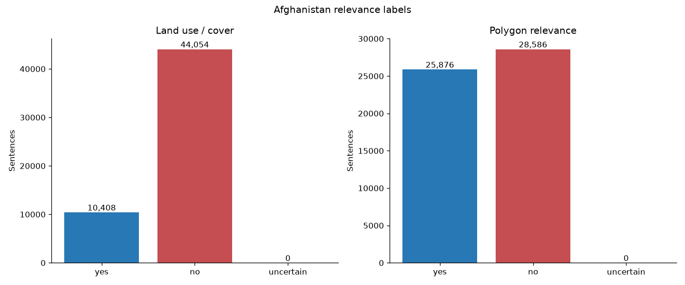
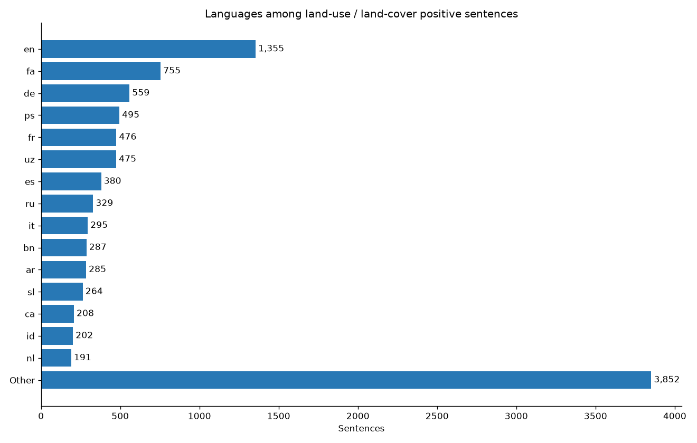

Afghanistan
sentence relevance
A complete, labeled sentence table for one country
54,462 rows · 161 polygons · 115 languages
LLM-generated labels, published as a reproducible proof of concept.

One row joins language, place, and evidence
The table keeps the source sentence and the model decision side by side.
حالة الطقس في مطار نيلي .
sentence_id · 0
polygon_id · afghanistan-latest:way:1008689574
polygon_name · فرودگاه نیلی
language · ar · source · wikipedia
It covers one country at useful scale
Large enough for analysis, still easy to inspect as a proof of concept.
Wikipedia
54,152 rows · 99.4%
Wikivoyage
310 rows · 0.6%
All 54,462 rows have latitude and longitude coordinates.
The two questions are independent
A sentence can describe land use without naming the polygon, or name the polygon without describing land use.

JOINT LABELS
no / no
28,089
no / yes
15,965
yes / yes
9,911
yes / no
497
Positive land-use labels span many languages
The first 15 languages account for 6,836 of 10,408 positive land-use rows.

TOP COUNTS
en 1,355
fa 755
de 559
ps 495
fr 476
uz 475
es 380
115 language codes appear in the table. The chart shows positive land-use rows.
Labels come from a fixed, auditable context
The model receives local context to resolve references. It is not asked to rewrite the sentence.
Source row
Sentence, neighbors, polygon name, region, language, section title, and URL metadata.
OSM context
Primary OSM tag plus every stored OSM tag, kept deterministic and complete.
Qwen3.6
Q4_K_M GGUF served by llama.cpp on a remote CUDA GPU.
Strict output
Closed labels and reason codes are parsed, repaired, and checkpointed.
1. Is the sentence relevant to land use or land cover?
2. Is it relevant to the named polygon?
The release is reproducible, not ground truth
Every artifact is tied to immutable inputs, a model file, a prompt version, and a content hash.
Input · 9f595311898e
Model · unsloth/Qwen3.6-27B-MTP-GGUF
File · Qwen3.6-27B-Q4_K_M.gguf
Engine · llama.cpp
Prompt · afghanistan-landuse-polygon-v2
Parquet SHA · 4e9f3300a3f93d5…
A useful starting point for relevance work
The release is ready for inspection and downstream experiments, with its limits visible.
- Analyze which sentences mention a mapped polygon.
- Study multilingual land-use and land-cover language.
- Build a reviewed seed set for future classifiers.
- Labels are generated by a language model, not human ground truth.
- The scope is Afghanistan only and uses one fixed prompt.
Dataset: Hugging Face · License: Apache-2.0